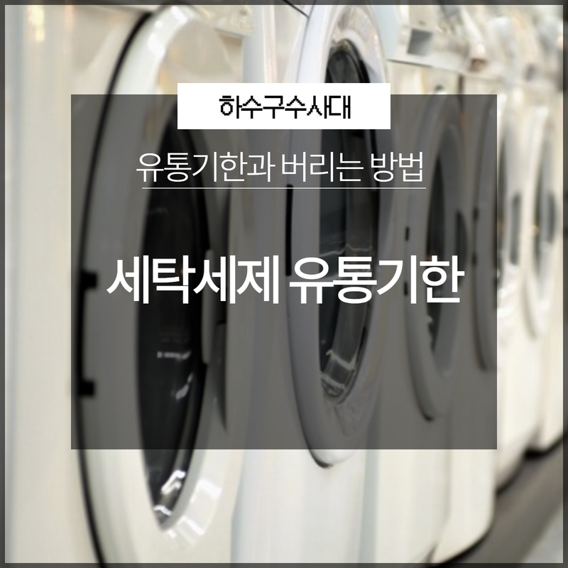
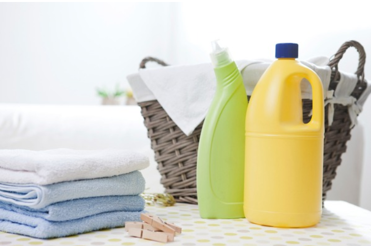
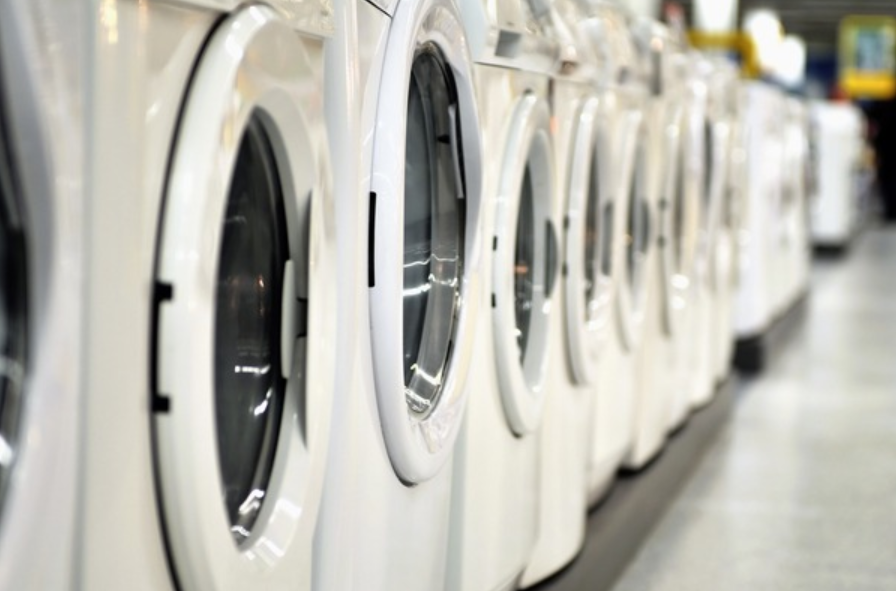
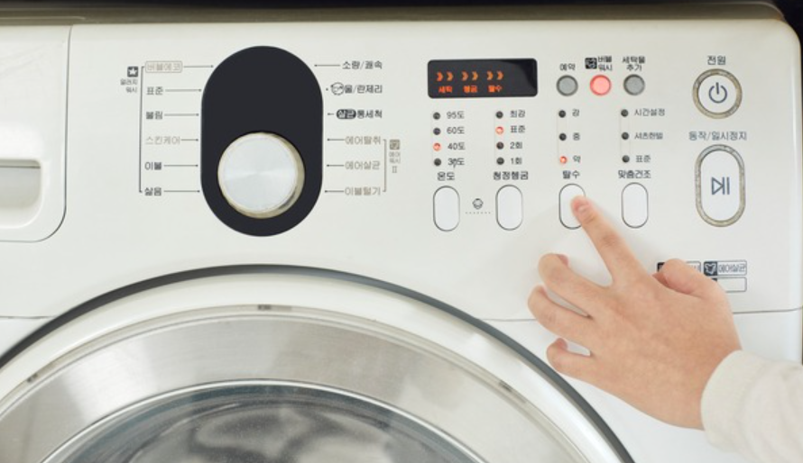
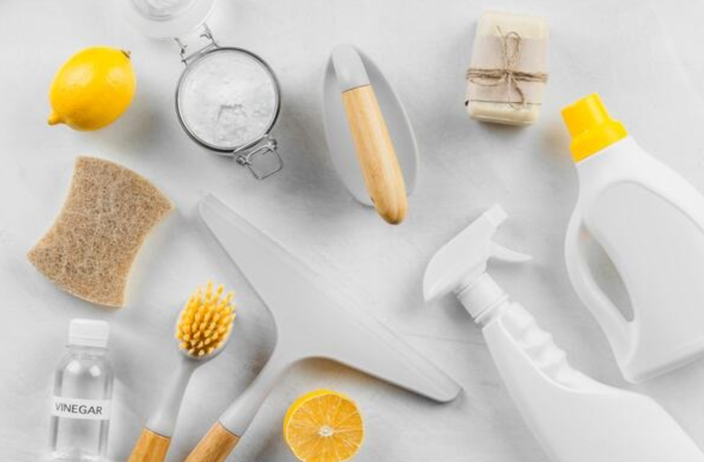
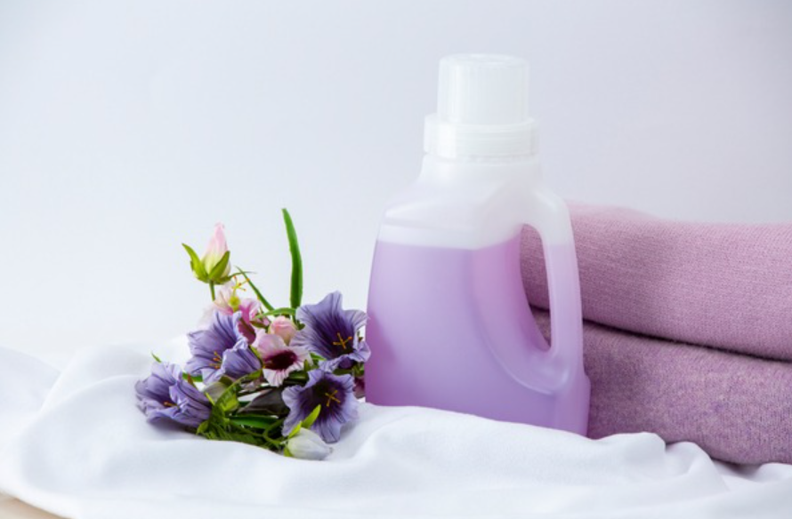
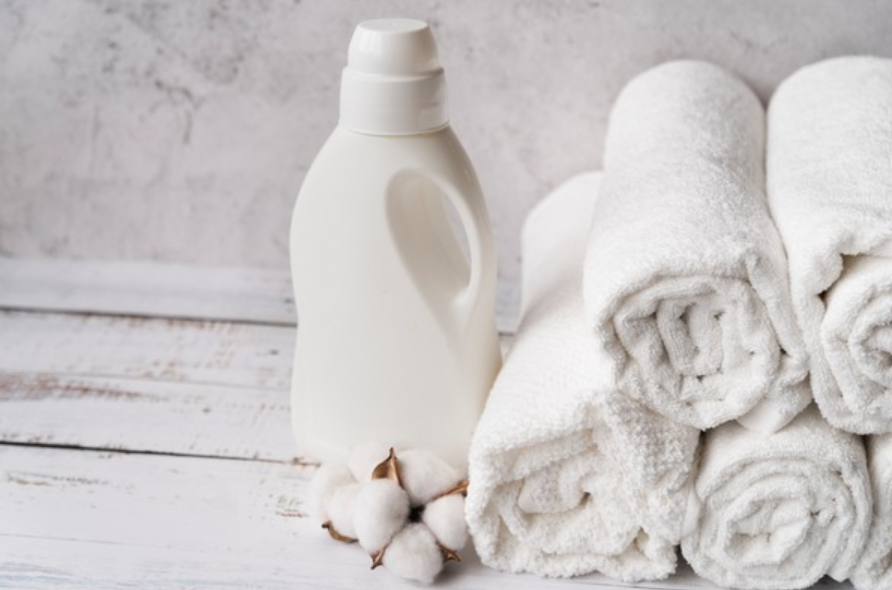

🏠 세탁세제 유통기한 지나면 세척력이 떨어지는 것을 알고 계시나요?
용인 하수구막힘 전문 시공 후기

📋 작업 개요
- 위치: 용인
- 서비스 유형: 하수구막힘, 배관청소, 고압세척
- 작업 일시: 2023. 3. 19. 22:38
- 업체명: 하수구수사대 (010-5615-2118)
🔍 문제 상황
안녕하세요 하수구수사대입니다:)
가정에서 매일 집안일을 하고 계시는 우리 주부님들의 경우에는 하루가 멀다 하고 하게 되는 것 중 하나가 바로 세탁이라고 할 수 있습니다. 옷은 우리 몸에 직접 닿는 것인 만큼 세탁을 할 때 세제를 사용하는 유통기한을 잘 알고 사용을 해야 하는데요 매일 사용을 하면서도 음식이 아니라는 이유로 유통기한을 제대로 알지 못하고 사용하시는 분들이 많이 있습니다.
오늘은 세탁세제 유통기한에 대한 정보를 알려드리도록 하겠습니다.
세탁세제는 화학성분이고 씻어내는 것이기 때문에 유통기한에 대해서 생각해 보신 적이 없으실 것입니다. 하지만 세탁세제나 섬유 유연제에도 유통기한이 따로 있는데요. 우리 피부에 직접 닿는 옷을 세탁을 하는 것인 만큼 유통기한을 알아두시는 것이 필요합니다.

🔎 원인 분석
💡 전문가 진단: 오늘은 세탁세제 유통기한에 대한 정보를 알려드리도록 하겠습니다.
세제는 직접 섭취를 하는 음식물이 아니고 자체의 향도 가지고 있다 보니 상한 것인지의 여부를 판단하는 것이 좀 어려울 수 있는데요 보통 세탁세제의 겉면에는 제조된 생산연도와 월을 적어두고 있습니다. 대부분의 분들이 세제 같은 경우는 상하지 않을 거라는 생각으로 대량으로 구매를 해서 사용을 하시는 분들이 많으실 텐데요.
평균적으로 세탁세제 유통기한은 36개월 정도라고 할 수 있습니다. 3년의 기한이 지난다고 하더라도 어느 정도 더 사용은 가능한데요 만약 개봉을 한 상황이라면 개봉 날짜를 기준으로 해서 6개월에서 1년 정도 사이에는 모두 사용을 하시는 것이 좋습니다.
세탁세제를 오래 사용하고자 하신다면
액체보다는 가루세제를 사용하시는 것이 좋은데요 액체는 물과 잘 섞이면서 이물감이 많이 없어서 액체를 많이 선호하시기도 하지만 액체세제는 상대적으로 수분이 많기 때문에 성분의 분해가 훨씬 더 빨리 진행이 된다고 할 수 있습니다.

🔧 작업 과정
그러므로 액체세제의 경우는 가루세제보다 더 빨리 변할 수 있기 때문에 가급적이면 빨리 사용을 하는 것이 좋습니다. 또한 가루세제의 경우는 개봉을 하게 되면 1년 안에 사용을 하시는 것이 좋은데요. 일정 시간이 지난 후에는 가루 성분도 분해가 시작이 되기 때문에 세탁효과가 떨어지게 될 수 있습니다. 그리고 언제 개봉을 했는지를 알 수 없는 세제를 사용 중이신 경우에는 되도록 폐기를 하고 새 제품을 사용하시는 것이 좋습니다.
유통기한이 지난 가루 세제 같은 경우는 폐기를 할 때
하수구에 버리지 마시고 종량제 봉투에 담아서 버리셔야 합니다. 많은 양을 한꺼번에 하수구에 버리게 되면 환경오염의 주범이 되는데요 이에 환경을 위해서도 종량제에 따로 버려주시는 것이 필요합니다.
그리고 우리가 많이 사용하는 표백제의 유통기한은 약 6개월 정도로 개봉 후 6개월이 지나게 되면 표백제의 성분이 저절로 분해됩니다. 이렇게 되면 표백 효과는 떨어질 수밖에 없는데요. 하지만 청소용으로 사용하는 데는 문제가 없습니다.
섬유 유연제의 유통기한은 1년 정도인데요.
개봉 후에 1년 이상 된 섬유 유연제의 경우는 섬유를 부드럽게 만드는 성분이 감소되게 되고 향이 날아가 버리기 때문에 유통기한 안에 사용을 하시는 것이 필요합니다. 섬유 유연제는 종이 제품이든 액체 제품이든 모두 유통기한 내에 사용하시는 것이 좋습니다. 세제의 성분은 시간이 지나면 세척력이 약해지기 마련입니다. 하지만 유통기한이 지났다고 해서 꼭 버려야 하는 건 아니지만 처음 사용할 때와 비교를 해서 변한 것이 보인다면 바로 교체를 하시는 것이 좋습니다.


✅ 작업 완료
1~2인 가구의 경우에는 종종 유통기한을 넘겨서 사용할 수 있기 때문에
세탁세제 유통기한을 잘 확인하시는 것이 필요합니다.




⚠️ 하수구 배관 막힘 예방 및 관리 가이드
- ✅ 머리카락, 비닐, 물티슈 등 물에 분해되지 않는 이물질은 하수구 유입을 절대 금지해 주세요.
- ✅ 하수구 거름망을 씌우고 모여진 이물질은 주기적으로 쓰레기통에 바로 비워주셔야 합니다.
- ✅ 배관 노후가 심할 경우 이물질이 더 쉽게 걸리므로 주기적인 배관 세척(고압세척 등)을 권장합니다.
- ✅ 작업 후 1년 이내 재발 시 하수구수사대에서 무상 A/S 보증 서비스를 제공합니다.
💡 핵심 정리
- 확실한 장비 작업(내시경 점검 및 샤프트 스케일링)으로 원인을 뿌리 뽑습니다.
- 작업 후 1년 이내에 동일한 부위 재발 시 100% 무상 A/S 서비스를 보장합니다.
- 서울 · 경기 · 인천 전 지역에 24시간 언제든 긴급 출동할 수 있도록 항시 대기 중입니다.
❓ 자주 묻는 질문 (FAQ)
🚨 용인 하수구막힘 문제로 고민이신가요?
정확한 원인 진단과 확실한 시공으로 재발 없는 해결을 약속드립니다.
24시간 긴급 출동 | 서울 · 경기 · 인천 전지역 | 1년 내 재발 시 무상 A/S